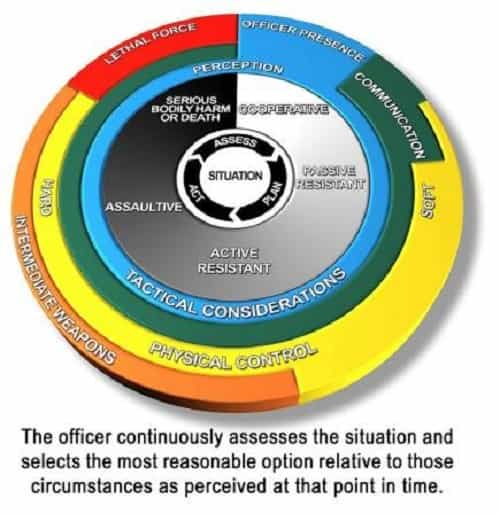
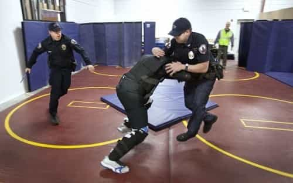
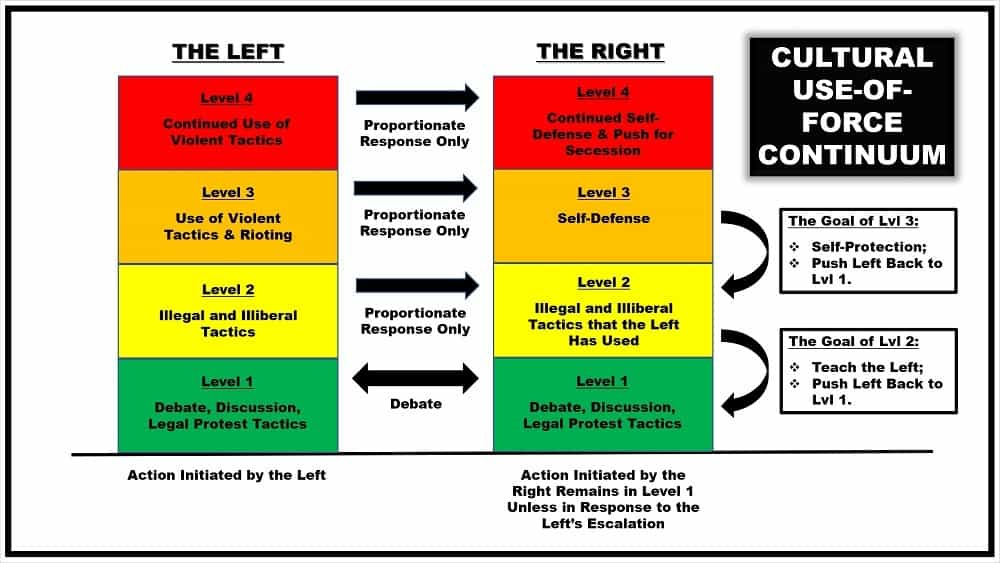
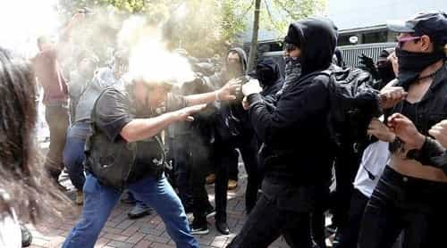
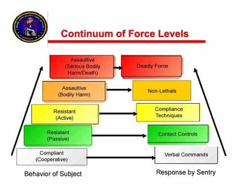

Ever since Laura Loomer rushed the stage of New York City’s rendition of Julius Caesar by the ‘Shakespeare in the Park’ theatre group, different factions of the political-right have been debating the merits of giving the political-left a taste of its own medicine. Of course, the “respectable” conservatives decried the use of any tit-for-tat strategy. By contrast, many members of the hard-right cheered such a move. And other members of the right fell somewhere in-between those two points-of-view.
For my part, I endorsed the idea of using the left’s tactics against it. In my ROK article “The Argument for Using Leftist Tactics Against the Left”, I argued that using the left’s tactics against them in a proportional manner, and when done in response to those tactics, was a perfectly moral strategy given our current state of cultural war with the left.
I also pointed out that just as a police officer is perfectly moral when he proportionally and reasonably responds to a threat even though he may use the same tactics that the threat uses, so too is the political-right perfectly moral in using the left’s tactics against them, so long as the right’s response is proportional and reasonable.
But with the above point already argued, the next issue that needs to be addressed is the following: can a systematic method or system be created to determine when and how the political-right should use the left’s tactics against them? And, in fact, there is such a system, and its inspiration also comes from the policing world.

Within the law enforcement community, modern police forces teach their officers something called a use-of-force continuum. This is a concept which is meant to provide police officers with a systematic and standard way to apply their use-of-force tactics in any given situation. And what this concept essentially teaches is that a police officer is justified in mirroring a subject’s own level of force, so long as the officer’s actions are fundamentally responsive to the threat against him and are also proportionate to that threat.
If a subject begins showing clear signs that he is about to use deadly force against a police officer, or if the subject already is trying to use deadly force, then the officer can respond to the threat with deadly force. But if a subject is simply engaging in a verbal argument with a police officer, then, of course, the police officer cannot legitimately respond to that subject with deadly force.
The use-of-force continuum teaches the police officer when they can legitimately use violent tactics against a subject as well as what type of violent tactics can be employed at what time.

Just as the police have a use-of-force continuum to help guide their actions, I propose that the political-right adopt a cultural ‘use-of-force’ continuum to help guide them in their cultural conflicts with the political-left. Such a tool would help individuals on the right know when they can use certain cultural-war tactics as well as understand what specific tactics they can legitimately use in response to the left’s attacks.
What would this cultural ‘use-of-force’ continuum look like?
First, it would make absolutely clear that any ‘illiberal’ tactic used by the political-right would only be employed in response to the left’s use of such a tactic. This does not mean that such a tactic could not be used pre-emptively, but it would mean that there would have to be clear and unmistakable signs, visible to a reasonable person, that the political-left was going to use such tactics before the right responded in kind.
This would be in much the same way as a police officer can become physically-aggressive with a subject so long as the subject is showing clear signs that he was about to be assaultive, such as through the clenching of his fists and jaw, posturing, cocking his fists to punch, and so on.
Also note that for the political-right to be strategically responsive does not mean that it must be on the defensive in a tactical sense; rather, it means that the political-right should follow the maxim of never starting anything, but always finishing everything. And in order to do that, an offensive tactical attitude is an absolute must!

Next, in terms of its approach, this cultural ‘use-of-force’ continuum would teach the political-right to mirror what the political-left does. So, if the political-left remains civil, engages in debate, and keeps their protests within the bounds of the law, then the political-right would restrict its tactics to the same activities. However, if the political-left (or parts of the political-left) begins to engage in illegal and illiberal activities and protests, then the political-right can respond with similar tactics, at least when targeting the parts of the political-left that are doing so.
Of course, this does not mean that the political-right necessarily has to use such tactics in response to the left if it is not strategically advantageous to do so, but it mean that such tactics could be used if it is in the interests of the political-right to employ them.
Finally, if the left decides to engage in actual violence against members of the political-right, then the political-right can always respond in self-defense against such an attack until the physical threat has been stopped. And if the threat do not stop, then alternative measures, such as pushing for secession, are the next step to be employed.
It should be made clear that this cultural use-of-force continuum is not only a rational strategy for the political-right to adopt, but it is also a perfectly moral and ethical strategy as well. For again, remember that both a criminal and a police officer use violence as a tactic to achieve their ends. However, a criminal uses violence for personal gain and to disrupt the stability of society; by contrast, a police officer—who is also called a peace officer—ideally uses violence for the benefit of society and as a means to restore peace to society.
The police officer and the criminal are completely different from a moral perspective even though they both employ the same tactics; and they are different precisely because their reasons and ultimate ends for using the tactic of violence are different. Indeed, the police officer does not become a criminal simply because he uses violence just like the criminal does.
In the same way, an individual on the political-right does not become a leftist simply because, in response to the left, the rightist uses tactics most often associated with the political-left. After all, the political-right’s reason and ultimate end for using such tactics are different from the left. The political-left uses illiberal tactics—such as shutting-down and attacking speakers on the political-right—in order to gain power and to undermine ideas that are opposed to them without debate.
By contrast, if the political-right decides to start using the same sort of illiberal tactics against the political-left, it is to teach the political-left a lesson in the only way that the left learns from: namely, painful experience. It is also to push the political-left back to a position where they once again start to respect free speech and civil debate. So, even though the tactics used might be the same, there is no moral equivalence between the left and the right because the reasons for using those tactics are completely different.
Furthermore, the minute the left stops using such tactics, the right will stop as well. However, the reverse of that is not the case. And that is a critical difference as well.

Is there a chance that, in response to the political-right’s use of their tactics, the political-left will simply escalate their own tactics? Of course there is a chance of this occurring. But the political-left is not going to stop escalating their tactics simply because the political-right asks them to. After all, the “respectable” conservatives have been politely asking the left to stop using such tactics for the last dozen years, and during that time, the political-left has culturally steam-rolled over such conservatives. They also continued to use their illiberal tactics with impunity wherever they held power, such as in academia.

In the end, if the only option is to keep losing to the political-left or to use the political-left’s tactics against them, then the choice is obvious. After all, while it may be distasteful to use such tactics for the limited time that it is necessary to beat back the political-left, the fact is that losing to the political-left is infinitely worse than merely using such tactics.
And so, in order to be able to use these tactics in a reasonable and legitimate manner, I suggest that the political-right adopt this idea of a cultural ‘use-of-force’ continuum, for doing so will help to ensure that any tactics used by the political-right are entirely proportional to the tactics used against them. And that will not only help the right win the cultural war, but it will also help them win the hearts and minds of the average citizen as well.
Read More: Tactics For The War Against Cultural Marxism In 2015